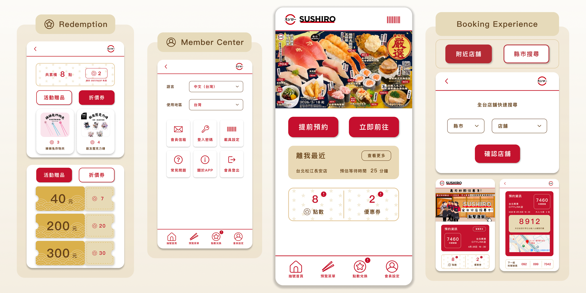
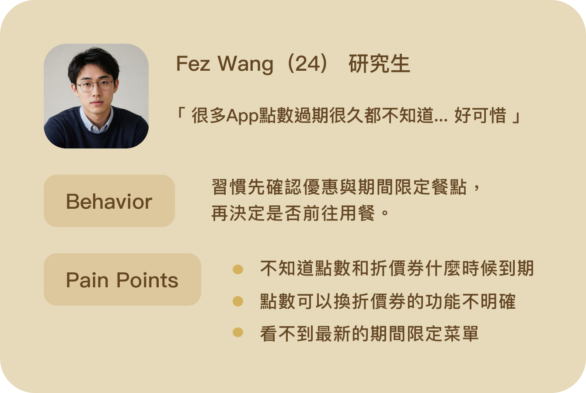
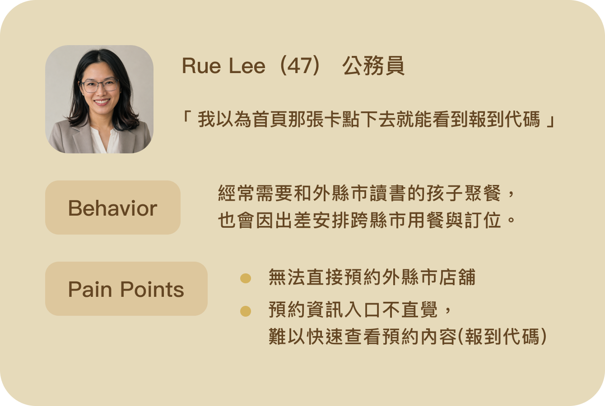
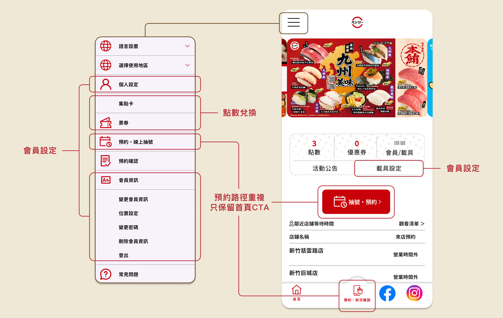
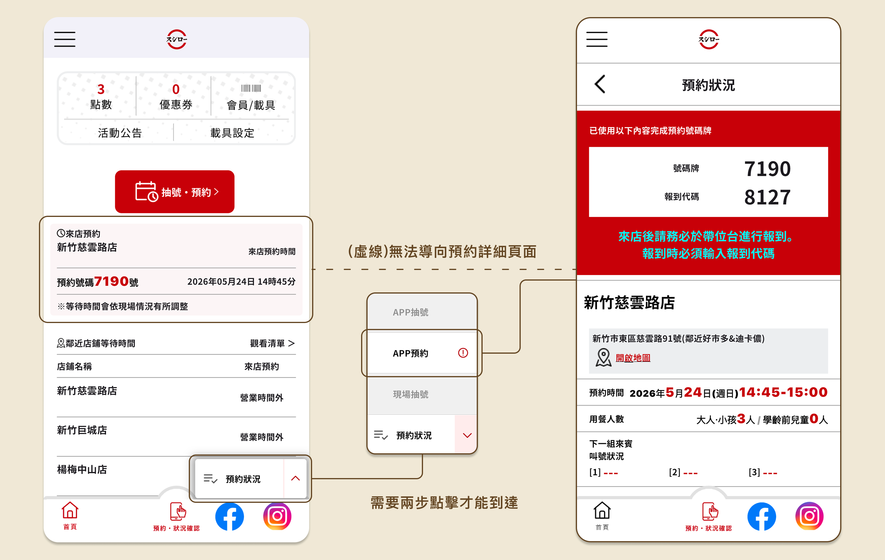
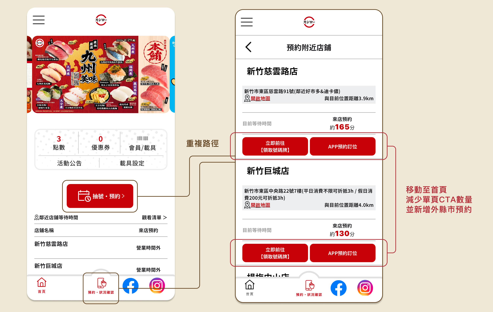

Sushiro Taiwan
App Redesign
Feb 2026 - Apr 2026
以自身使用經驗為切入點，選擇 Sushiro Taiwan 作為重新設計的對象，從實際操作過程中發現多項影響體驗的問題。進一步透過使用者訪談與觀察，整理並歸納出關鍵痛點與核心需求，作為後續設計優化的依據。
本專案聚焦於預約流程的優化與整體體驗提升，從資訊架構、操作流程到介面呈現進行系統性調整，降低使用者在預約過程中的認知負擔與操作成本，同時提升流程的直覺性與效率，讓使用體驗更加流暢且符合實際使用情境。

Problem & Goal
現有 App 介面存在重複資訊與不必要的操作步驟，導致資訊層級不清晰，也增加使用者操作上的負擔。因此，本次重新設計將聚焦於優化資訊架構與操作流程，透過整合功能與簡化路徑，提升整體使用效率與體驗。
預約流程存在操作與邏輯問題，影響任務完成效率
優化預約流程的操作，減少使用者的認知負擔
預約資訊入口重複且不明確，降低可發現性(discoverability)
將預約資訊統整合併顯示，引導使用者直覺點擊正確入口
點數和優惠券缺乏明確到期提示，影響使用者決策與參與度
在首頁就能直觀看到到期提示，提升使用者參與度與回訪率
Process
User Research
訪談六位 20–50 歲的使用者，了解他們在使用 Sushiro Taiwan App 過程中的操作習慣與不便之處，並根據研究結果歸納核心痛點與建立 Persona，作為後續優化方向的依據。


User Flow Optimization
重新梳理預約與報到流程，整合重複操作並強化系統回饋，引導使用者以更直覺的方式完成預約、查詢與現場報到，提升整體流程效率與使用體驗。

* red sections indicate the optimized flow
Information Architecture Refinement
整合會員與點數相關功能，依使用情境重新規劃資訊架構。將高頻使用的點數兌換功獨立呈現，並移除與首頁重複的預約入口，降低導覽層級與認知負擔，讓使用者更快速找到所需功能。

目前預約資訊分散於首頁資訊卡與底部收合選單，且需經過多次點擊才能查看完整內容。透過整合為單一入口並直接導向預約詳情頁，縮短操作路徑，提升資訊可發現性與使用效率。

將分散於預約頁面的重複 CTA 整合至首頁主要操作區，集中預約決策入口。同時新增跨縣市店舖預約功能，提升店舖搜尋彈性，讓使用者能依需求快速選擇合適門市。

Wireframing ＆ Iteration
探索不同首頁資訊架構與預約入口配置，透過低保真線框驗證功能分組、導覽模式與 CTA 規劃對使用流程的影響。

*立即前往

*提前預約（縣市搜尋）

*提前預約（附近店舖）

經使用者測試後發現，底部導覽(Option B) 更符合 App 的操作習慣，因此保留作為主要功能入口；首頁最新消息則維持 Hero Carousel (Option A) 形式，以能讓使用者直接觸及。另一方面，將預約功能拆分為三個 CTA (Option B) 雖能減少後續操作步驟，卻增加初始決策成本，導致部分使用者難以快速理解各選項差異。此外，禮物圖示與點數兌換的關聯性不足、首頁缺少附近店舖等候時間資訊，以及點數到期缺乏提醒機制等問題仍未被解決，因此於後續高保真設計中進一步優化相關資訊呈現與功能配置。
High-Fidelity Design
根據設計方向製作高擬真設計（High-Fi），完善視覺風格、互動細節與品牌一致性。呈現最終設計成果，說明優化後的使用流程、關鍵改動與體驗提升成效。

Final Solution
重新規劃預約流程與操作路徑，簡化決策與操作步驟，讓使用者能更快速且直覺地完成預約，提升整體操作流暢度與完成效率。
🔗 Figma Mock-upReflection
在此網站重新設計專案中，我最大的收穫是理解到設計決策需要在理想與實務之間取得平衡。
初期提出的視覺方向雖然能強化公司形象識別，但在實際開發評估中，部分設計因預算限制難以落地，並且公司網站的觸及者多為中年及以上的使用者，簡單明瞭的設計也更契合公司形象。這讓我更深刻的體會設計不僅是美感呈現，更需要實作可行性與同理使用者。
此外，透過與工程團隊的多次溝通與調整，我更加體會到設計與工程之間的協作關係。在反覆討論與取捨的過程中，逐步找到兼顧視覺設計與開發效率的解法，這也讓最終成果更貼近實際需求。
回顧此專案，若能再優化，我會在前期投入更多時間於使用者行為與內容架構的驗證，而非僅從既有內容進行重整，以進一步提升整體使用體驗與資訊傳達的清晰度。同時也讓我更意識到，清晰的資訊架構與操作路徑，對於降低使用者認知負荷與提升網站可用性具有關鍵影響。